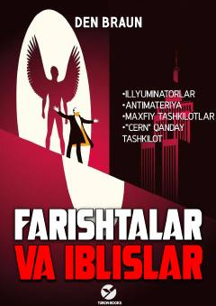

FVRobert Lengdonning Vatikanni qutqarish uchun olib borgan hayajonli va sirli sarguzashtlari.
Garvard professori Robert Lengdon sirli qotillik va qadimiy yashirin jamiyatlar bilan bog'liq jumboqlarni yechishga kirishadi. U fizik Leonardo Vetraning o'limi ortidagi haqiqatni ochish va Vatikanni tahdid solayotgan xavfdan qutqarish uchun poygaga kiradi. Bu asar ilm-fan va din o'rtasidagi abadiy qarama-qarshilikni o'zida mujassam etgan.